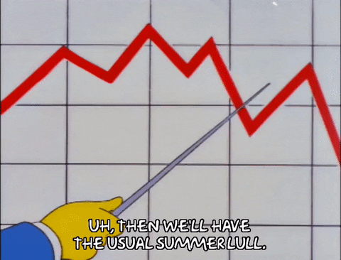
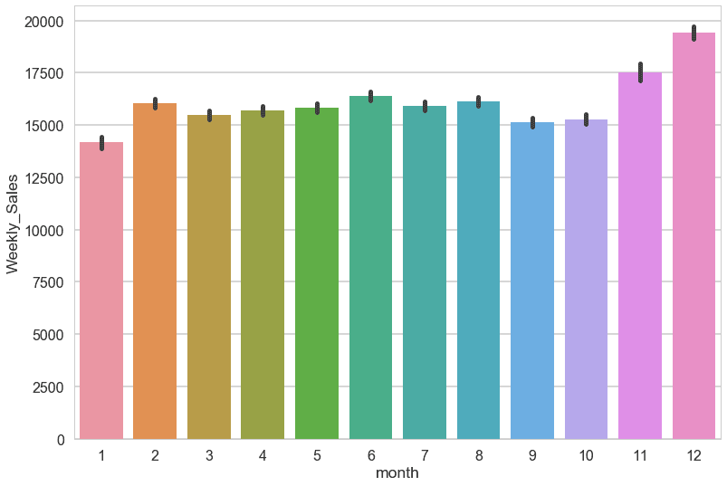
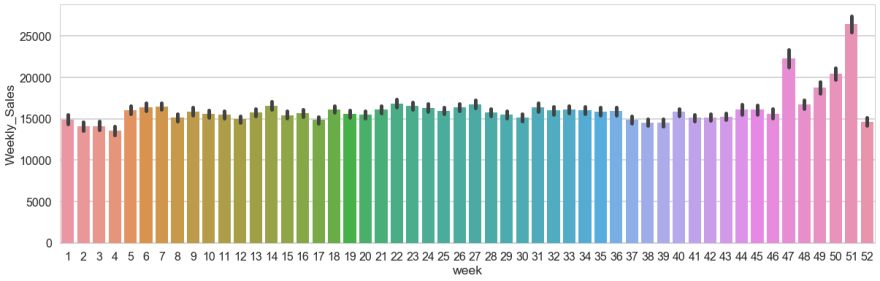
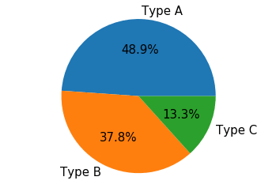
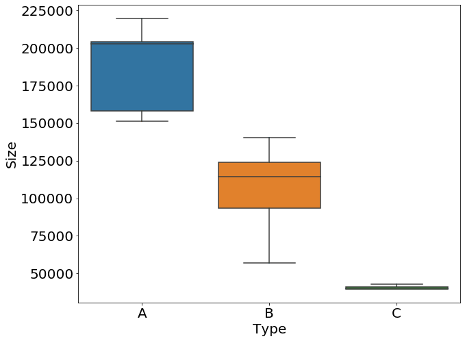
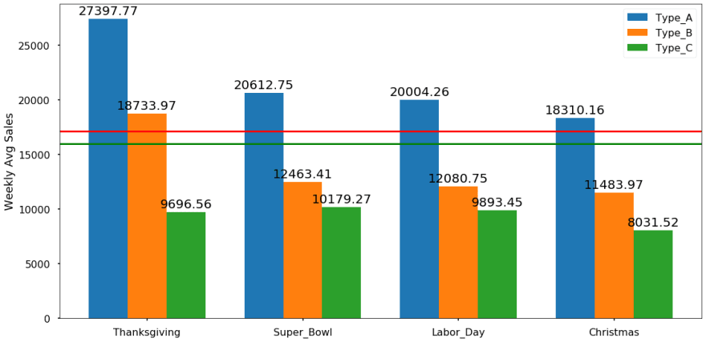

Walmart Sales Analysis
Walmart Sales Analysis
With an online revenue of almost US$15 billion and a growth rate of 43%, Walmart is able to take the second place within eCommerce in the United States. This is largely due to a versatile online store with products in various categories including Electronics & Media. It is the largest private employer in the world

The main challenge of this project for me is seasonal sales. Some seasons have higher sales values like Thanksgiving, Black Friday and Christmas. These seasonal effects make the data highly non-stationary. Dealing with non-stationary data is not easy. There are many ways to solve this problem.
- Differencing : We can calculate the difference of consecutive terms in data. Differencing is generally done to get rid of the varying average.
- Seasonal Differencing : The idea behind this technique is taking the difference of same seasons like the difference between 2010 and 2011 for the first week of January.
- Transforming Data: This technique is generally used for non-constant variances. We can transform data with taking log, square root or power transform, mainly. We can also shift the data.
Explorations

When we look at the average sales monthly, it is obviously seen that November and December have higher sales. To make deep analysis, I looked at the weekly sales with corresponding week numbers.

- From the graph, we can understand easily 51st and 47th weeks have higher sales. It means that higher demands in whole year belong to Christmas, Thanksgiving and Black Friday seasons. 50th and 49th weeks are following top 2. And, it is not obviously seen from the graph but I found it from values in project that 22nd week is in the top 5. It means that after schools are closed at the end of the May, people prefer to shop for summer or holiday.
- Another interesting exploration is that when I looked at the top highest sales, I found it in Thanksgiving time. But, when we look at the graph above, Christmas has higher averages. It means that, maybe Thanksgiving week has higher values individually for some stores and some departments but when we take the average and sort them, Christmas is the best for general average weekly sales.
- Although during other months sales are closed to each others, January has the least sales average. This is the result of November and December high sales. After two high sales month, people prefer to pay less on January.


From pie plot and box plot above, we can understand that there are mainly 3 types of Walmart stores in the data and Walmart categorized them according to sizes. Type A is the biggest store, B is medium and C is the smallest. And, nearly half of the stores in the data are Type A stores which are biggest.

- In the graph above, red line shows the average holiday sales and green line represents the average non-holiday sales. According to lines, holiday average is higher than non-holiday, as expected.
- It is obviously seen from the graph that size of the store is directly proportional to weekly sales. Bigger stores have higher average sales.
- And, it is interesting that according to this graph, Thanksgiving sales are shown higher than Christmas but we know from the weekly graph, 51th week is the best. When I looked deeper to the data, I realized that Walmart assigned Christmas sales to the 31-Dec-10, 30-Dec-11, 28-Dec-12, 27-Dec-13. But we know that people generally do their Christmas shopping before last week of the year. So, it is not a good idea to assign Christmas sale season to the last week of the year.